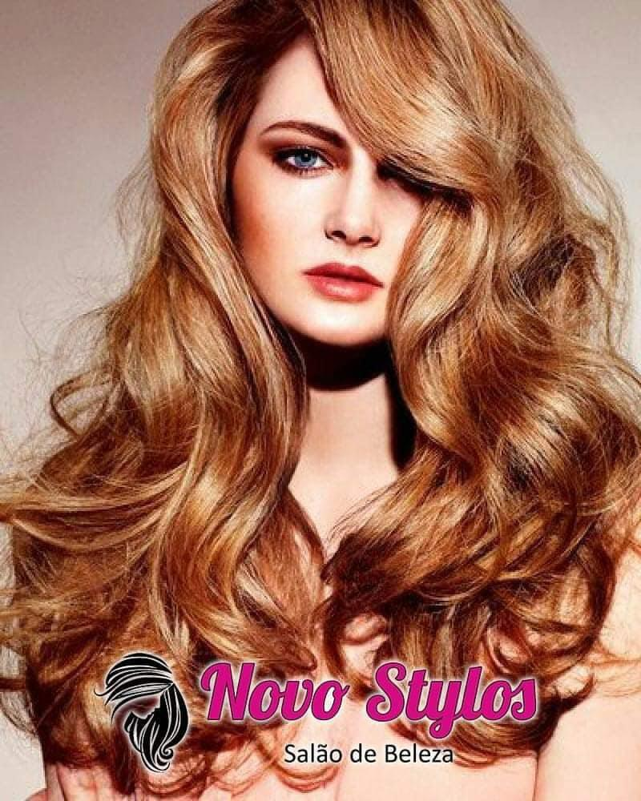
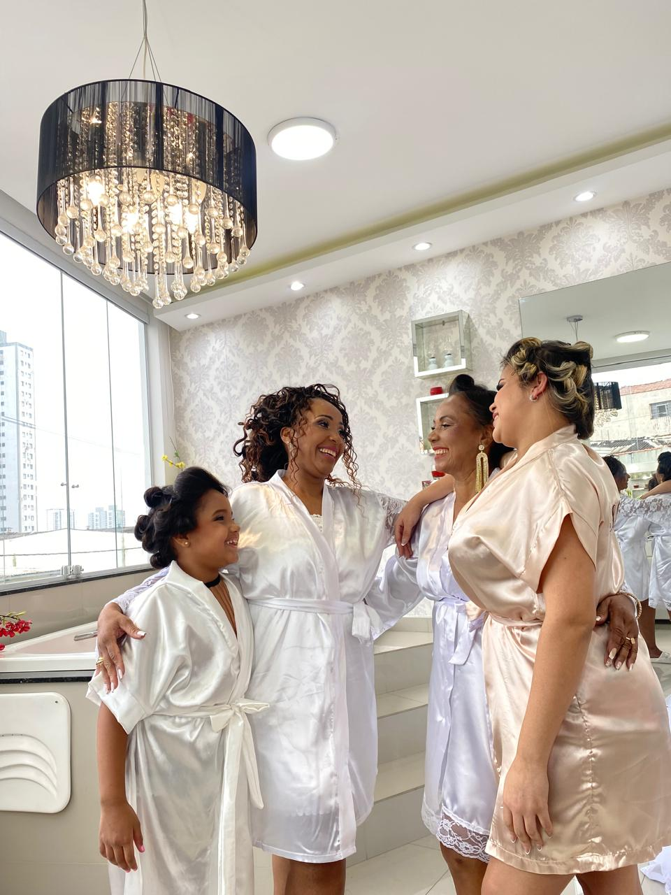
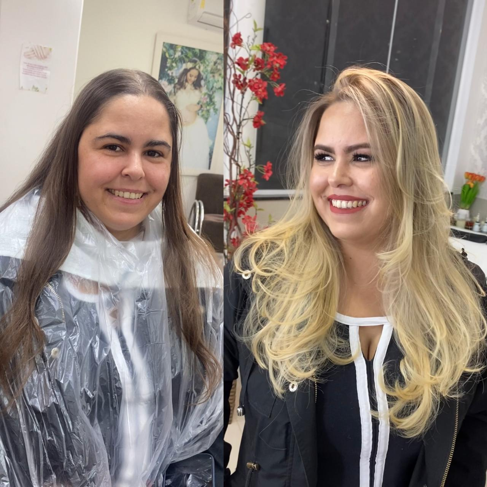
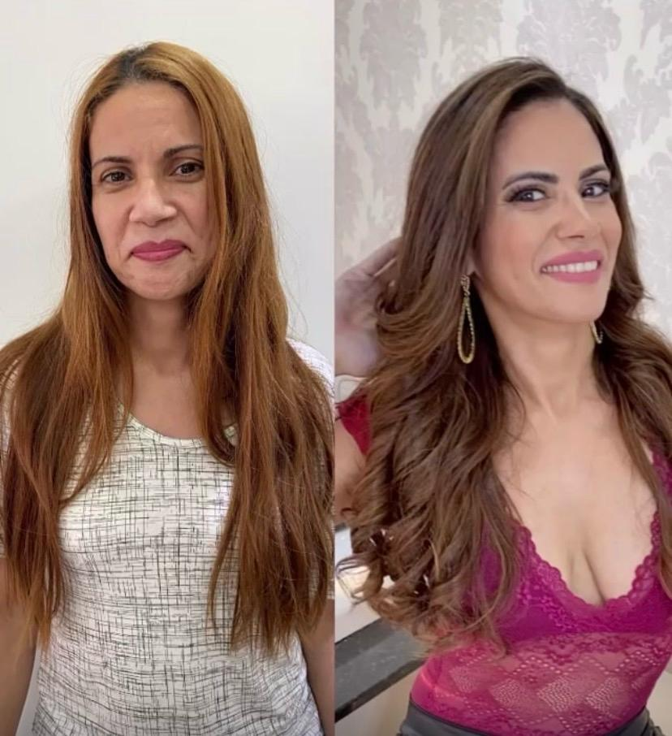
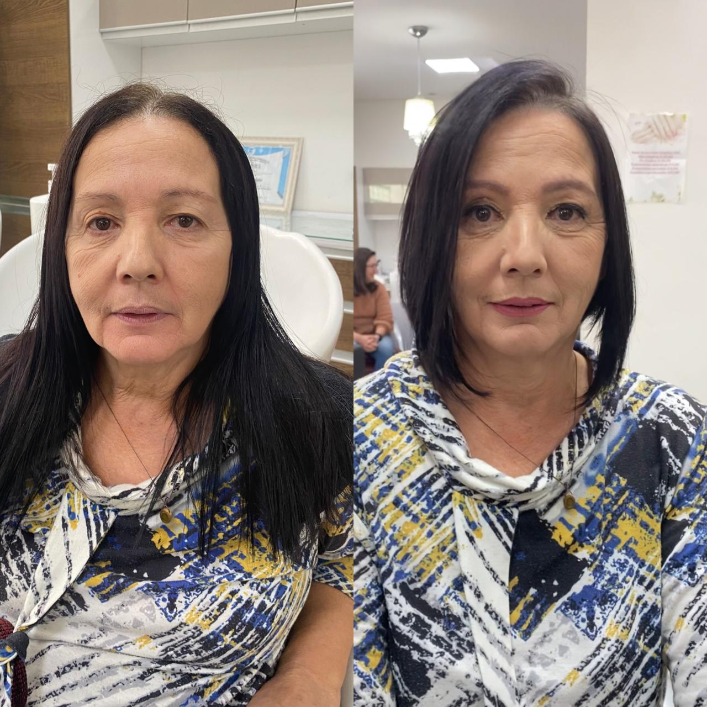

Terapia capilar
A especialidade da casa: queda, oleosidade e saúde do couro cabeludo, com apoio de laser.
salão de beleza · vila salete, são paulo
Cabelo, terapia capilar e estética num só lugar. Aqui o cuidado começa com um diagnóstico, não com um palpite.


Não é um salão onde você senta na cadeira e alguém decide por você. A Luciana olha o seu couro cabeludo, entende o seu rosto e a sua rotina, e só depois escolhe a técnica.
“A saúde do cabelo para mim vem sempre em primeiro lugar.”
Da saúde do couro cabeludo ao acabamento que dura em casa, tudo acontece no mesmo lugar.
A especialidade da casa: queda, oleosidade e saúde do couro cabeludo, com apoio de laser.
Corte, escova, mechas e loiros sem sacrificar a saúde do fio.
O corte certo para o seu rosto, não para a moda da vez.

Hidromassagem, penteado e maquiagem para você e para as madrinhas, num espaço reservado, com o time organizado em torno do seu horário.
Conhecer o dia da noiva →Uma amostra das transformações feitas aqui dentro.



Manda uma mensagem contando o que você precisa. A gente responde com o melhor caminho para o seu cabelo.
Agendar no WhatsApp